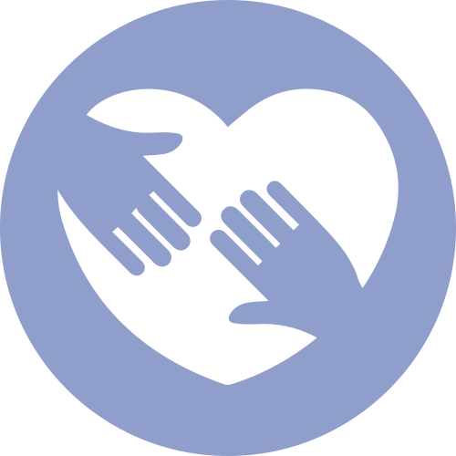

Vrywilligers
“En wat julle ook al doen, doen dit van harte soos vir die Here en nie vir mense nie.” Kolossense 3:23
By Collage glo ons elke Christen is geroep om te dien. Vrywilligers is deel van die geloofsfamilie. Sonder julle gebeur Sondag nie. Of jy met kinders werk, saam met iemand bid, of agter die skerms help, dit tel.
Gasvryheid is ’n goeie plek om te begin as jy onseker is. Die span by die deure is dikwels die eerste gesig wat ’n besoeker sien.
Waar mense dien
- Gasvryheid by die deure en die koffie
- Musiek en klank
- Kinderstad, Zone 7 en tieners
- Kleingroepe
- Manne, vroue en gebed
- Hospitaal- en siekebesoek
- Uitreike